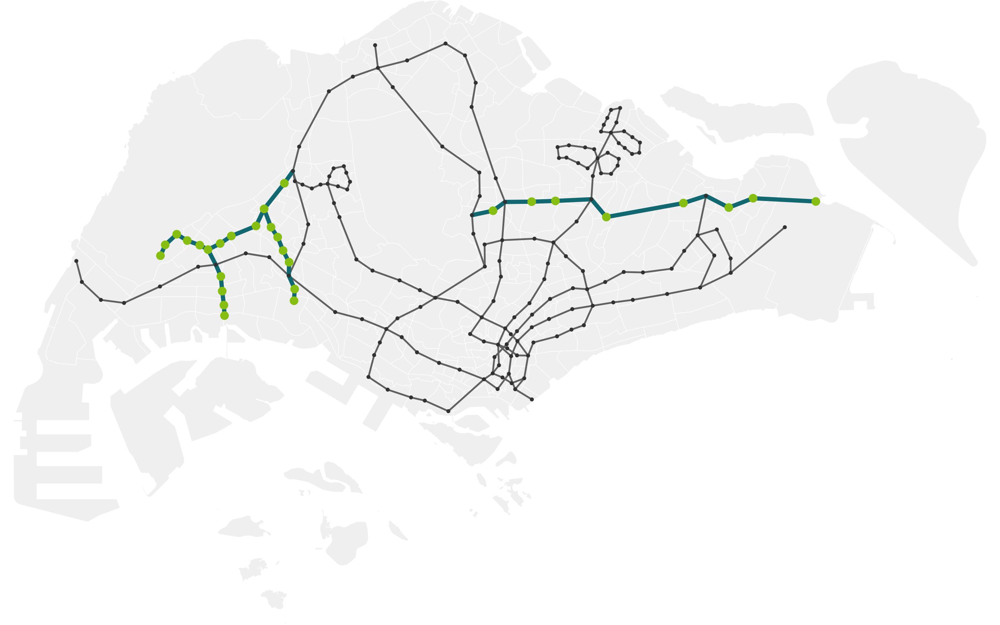
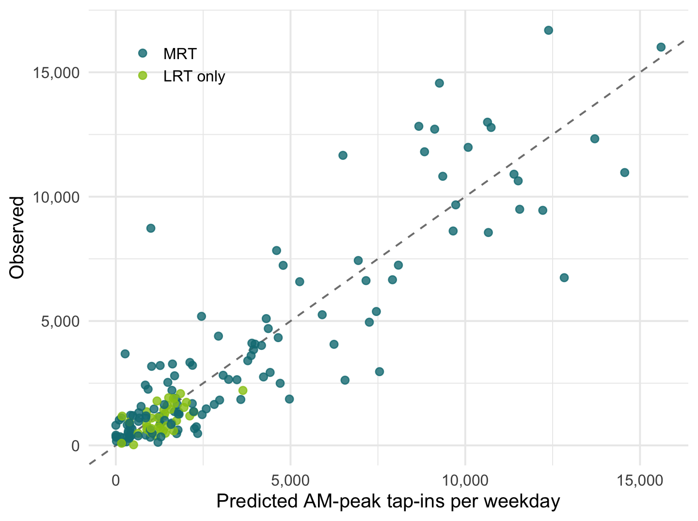
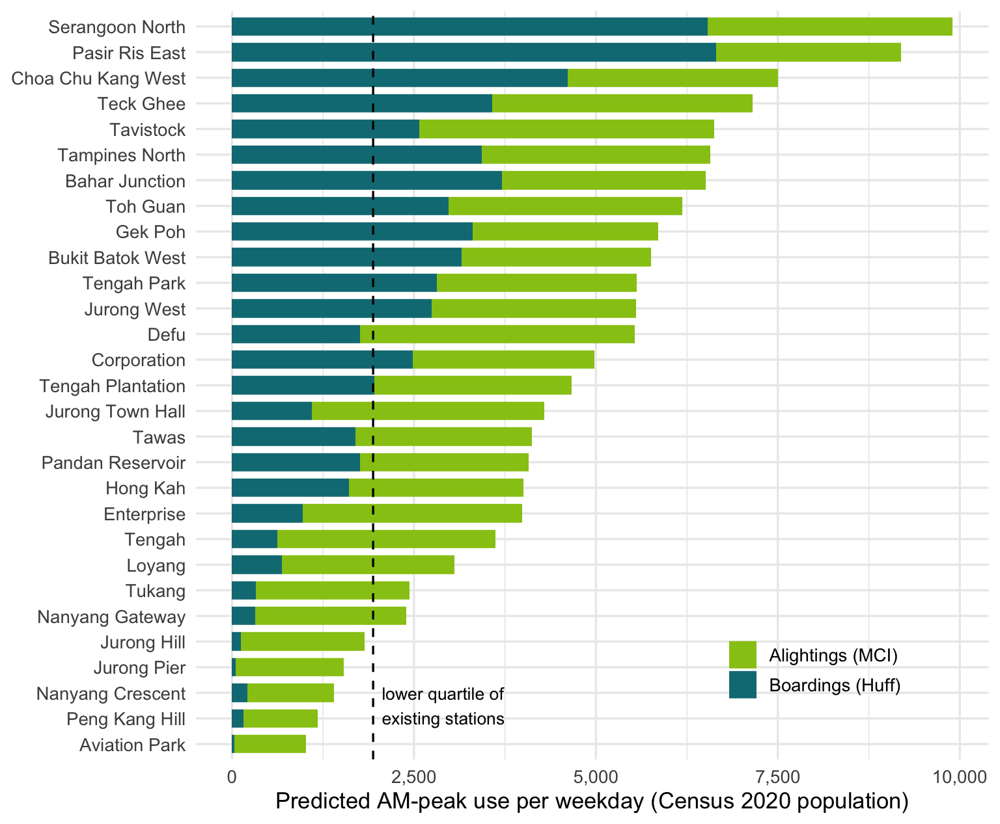
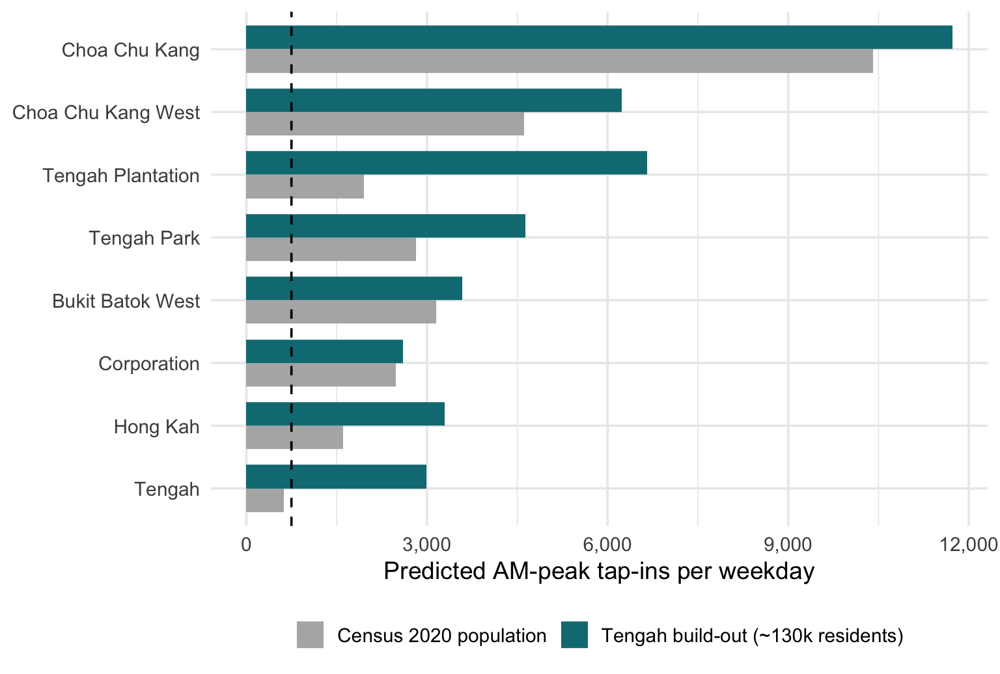
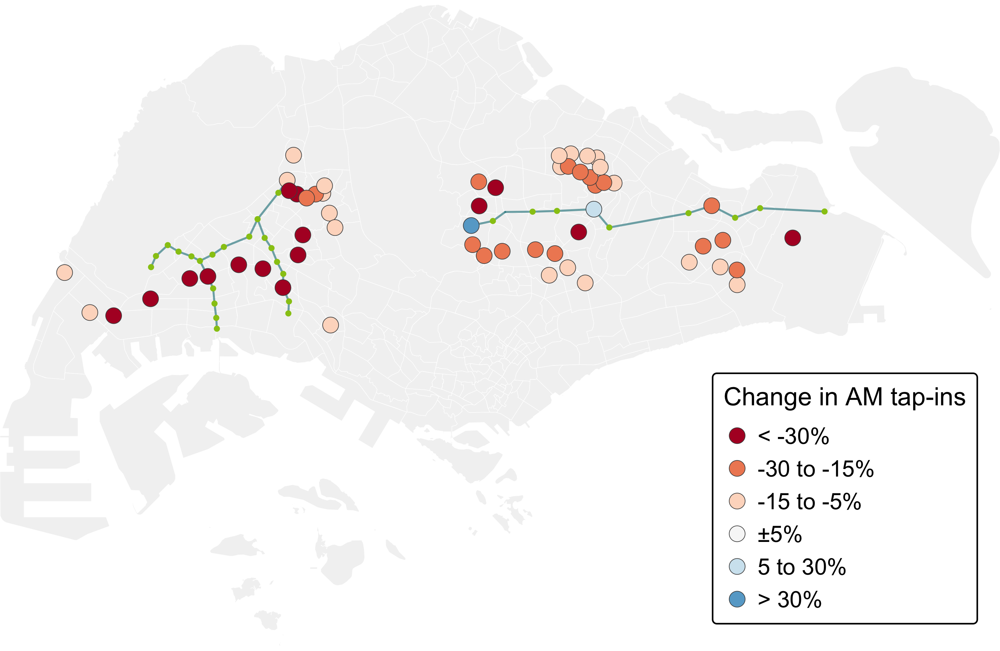
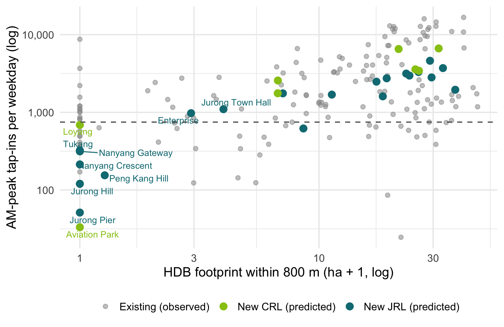

Station-level ridership prediction for the Jurong Region Line and Cross Island Line Phase 1 using probabilistic spatial interaction models
2026-11-13
01 Research question Can a model forecast demand at stations that do not exist yet?
02 Study area, data and approach 164 stations, 286 subzones, five data traps, and a calibrated Huff model
03 Key findings Model validity, new-station forecasts, the Tengah test, impacts and market areas
04 Planning implications Housing-led appraisal, phasing, feeder buses and interchange capacity
05 Limitations What the forecasts can and cannot support
↗ Technical report Full, reproducible workflow in Quarto
Can a probabilistic spatial interaction model, calibrated on observed tap-ins, forecast ridership at the 29 new JRL and CRL1 stations, and show which existing stations lose riders to them?
36 JRL (24) and CRL Phase 1 (12) stations, opening 2028–2030
29 + 7 genuinely new stations + existing stations upgraded to interchanges
9.8M weekday morning-peak tap-ins (May 2022) used to calibrate the model
164 × 286 stations × resident subzones in the choice model
Why it matters. Hume station stood finished but closed for a decade, and Buangkok and Woodleigh stayed shut when the NEL opened, because expected ridership could not cover operating costs. Planners need station-level forecasts before the trains run.

May 2022 network (grey) and JRL / CRL1 extensions (teal) with the 29 new stations (green)
Inputs
Data traps found and cleared
1 Clean & build Audit five data sources; build origin, destination and two spatial interaction data frames. → 286 origins × 164 / 193 stations
2 Attraction specs Six Huff specifications compared: lines, LRT, closeness, HDB within 800 m, bus stops within 400 m. → Model 4: lines + LRT + HDB 800 m
3 Huff calibration Residents choose a station by its lines, LRT status and surrounding housing, and by access distance; two benchmarks. → R² 0.81, CV R² 0.79
4 2030 scenario Add 29 stations, upgrade 7 interchanges; re-run with MCI::huff.shares(); Tengah build-out test. → forecasts & market areas
5 Value-added MCI destination-choice model (second MCI model) for alightings; LISA on Huff residuals. → destination demand, regional bias
Demand · weekday 06:00–09:59 tap-ins Attraction · lines γ = 1.07, LRT δ = -1.49, HDB 800 m θ = 0.21 Decay · exponential λ = 1.83 per km Calibration · optim() on RMSE, 5-fold CV Model 6 check · + bus stops: CV R² 0.788 vs 0.791, rank ρ = 0.99 Software · R: sf, MCI, igraph, spdep, tmap, leaflet
Key modelling choice. Attractiveness depends on the HDB housing within 800 m (Model 4), not just on lines and LRT status. Older stations were built inside existing HDB towns; many newer ones sit in districts with little housing yet. Without this term, the model would rate a station in an empty district like one in a mature estate.

0.81 R² for 164 stations, vs 0.44 for nearest-station allocation and 0.48 for the default Huff model
0.79 out-of-sample R² (5-fold cross-validation): parameters are stable, not over-fitted
−60% attractiveness per extra 500 m of access distance: residents choose the station they can walk to

Strongest new stations
Pasir Ris East, Serangoon North, Choa Chu Kang West, inserted into mature HDB estates beyond walking distance of MRT today, would rank in the top quarter of existing stations.
Value-added: MCI destination model
On boardings alone, 9 stations look like ghosts. An MCI model of where passengers alight (job and education floor space, network distance) finds 13 destination stations and rescues Tengah, Loyang, Tukang, Nanyang Gateway.
Genuine opening-day risks: Aviation Park, Peng Kang Hill, Nanyang Crescent, Jurong Pier, Jurong Hill: redeveloping industrial land, NTU campus and airport logistics.

620 → 2,992 Tengah (JS3) morning tap-ins per weekday, from 2020 population to full build-out (42,000 homes)
×3.4 Tengah Plantation (JE1), which becomes one of the JRL’s busiest stations
The Hume lesson in numbers. Whether a JRL station is a white elephant depends on when homes are occupied relative to opening day. The model can set a completion threshold for opening each station.

Existing stations changing by 5% or more once JRL and CRL1 open (Census 2020 population)
12% of morning boardings move to the new stations; 32 existing stations lose 15% or more, in three clusters next to the new lines
Hardest hit
Western EWL: Pioneer, Lakeside, Chinese Garden, Joo Koon lose over half their boardings to Gek Poh, Jurong West and Tawas.
The interchange paradox
Ang Mo Kio, Hougang, Bright Hill gain; Boon Lay, Choa Chu Kang, Jurong East, Pasir Ris lose tap-ins despite the extra line, while transfer crowding still rises.

ρ = 0.43 between housing within 800 m and morning boardings at existing stations: older lines were built inside existing HDB towns
10 of 29 new stations have under 5 ha of HDB housing within 800 m, in industrial estates, at NTU and near the airport
These stations are forecast at the bottom of the network. Their case rests on workers, students or future housing, and should be made explicitly.
| Evidence | Recommended response | Why |
|---|---|---|
| New stations with almost no housing within 800 m Enterprise, Tukang, Jurong Hill, Jurong Pier … |
Make the non-resident case explicitly, or defer | Housing within walking distance is what fills a station in the morning. |
| Tengah stations below the ghost-risk line on 2020 population JS3 Tengah, JE1 Tengah Plantation |
Tie opening to housing completion thresholds | Forecast boardings rise several-fold at build-out; opening day matters more than the line itself. |
| Western EWL and Kovan–Serangoon belt lose 15%+ Pioneer, Lakeside, Chinese Garden, Kovan |
Re-draw feeder-bus routes around new market areas | Avoid bus kilometres that duplicate the new rail catchments. |
| Seven upgraded interchanges Jurong East, Boon Lay, Hougang, Ang Mo Kio … |
Public safety: plan platform, stair and transfer-corridor capacity before opening | Transfers are invisible in tap-ins but rise at every interchange; crowding at peak transfers is the main safety risk. |
| Destination stations with low home-based boardings Tukang, Enterprise, Nanyang Gateway, Tengah |
Appraise on boardings + alightings, not boardings alone | The MCI model shows workers and students arriving keep most of them above the ghost-risk line. |
| Model over-predicts in the east (LISA) Pasir Ris East, Tampines North, Loyang |
Treat eastern forecasts as upper bounds | Residuals cluster significantly (Moran's I = 0.19, p = 0.001). |
Forecasts are a comparative screening tool: they rank stations and locate impacts reliably, while absolute numbers should be refreshed with current population and opening-day service plans.
Data
Method
Interpretation
Reproducible workflow. The Quarto technical report runs end-to-end with a fixed seed (626) and documents every data trap, parameter and modelling decision.
Technical report: Who Will Ride the New Lines? · Code: github.com/sabrinahao99/ISSS626-GEO
ISSS626 · Take-home Exercise 3 · Executive Summary